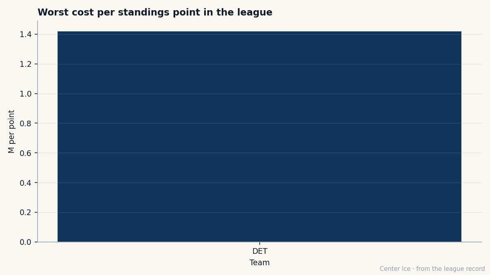

DET
DET188th Overall, Potential 81, Overall 91: Manny Legace Has Outgrown the Number the Book Gave Him at 19
The goaltender Detroit waived in 1999 and reclaimed twelve days later carries the same Book grade as a man making $8.00M, on a contract that costs $1.20M, with 6 months left.
 Carol BinghamFeatures writer · Rinkside
Carol BinghamFeatures writer · RinksideOctober 1999.  Manny Legace84 is 26 years old, 5'8, 170 pounds, and he has played in the Ontario Hockey League, the American Hockey League, the ECHL, the International Hockey League, and Roller Hockey International. He signed with Detroit on July 15. Detroit had
Manny Legace84 is 26 years old, 5'8, 170 pounds, and he has played in the Ontario Hockey League, the American Hockey League, the ECHL, the International Hockey League, and Roller Hockey International. He signed with Detroit on July 15. Detroit had  Chris Osgood84 and Ken Wregget in front of him. They put him on waivers on September 29. Vancouver claimed him. Detroit claimed him back on October 13, twelve days later, before he ever took a shift in a Canucks sweater.
Chris Osgood84 and Ken Wregget in front of him. They put him on waivers on September 29. Vancouver claimed him. Detroit claimed him back on October 13, twelve days later, before he ever took a shift in a Canucks sweater.
Now he is 32, in Detroit's crease, 14 wins and 13 losses in 27 starts, a 2.06 goals-against average, a 0.889 save percentage, and the Bureau's Book has him at 91. So does the man making $8.00M.
 Curtis Joseph82 is 38 years old. He has played 14 games this season, carries an overall of 91, morale of 96, and a salary of $8.00M with 1 year left. Legace carries the same overall, the same 1 year, and $1.20M. The Red Wings payroll is $66.91M. Detroit has 47 standings points. That comes to $1.42M per point, tied with
Curtis Joseph82 is 38 years old. He has played 14 games this season, carries an overall of 91, morale of 96, and a salary of $8.00M with 1 year left. Legace carries the same overall, the same 1 year, and $1.20M. The Red Wings payroll is $66.91M. Detroit has 47 standings points. That comes to $1.42M per point, tied with  Phoenix Coyotes for the 7th-worst rate in the league.
Phoenix Coyotes for the 7th-worst rate in the league.

The Book said 81
The projection was set when he was 19, the 188th player chosen in the 7th round of the 1993 draft. Potential 81. He is at 91 today, 10 above the number the Bureau put on him when he was still playing for the Niagara Falls Thunder. The Development Index has him at +3 above his base grade of 88. The season line says the same thing: a 2.06 GAA, a 0.889 save percentage, 14 wins from 27 starts.
The grades that make him a 91 are the ones a goaltender lives on. Glove hand 97, glove side 97, sliding save 95. The ones that keep him 5'8 forever: toughness 50, consistency 51, fighting 51. The Book knows the size problem. Potential 81 was the Book's way of saying a short man with quick hands has a ceiling. He punched through it somewhere between the waiver wire and the Crease.
The minor-league decade
He played for the Springfield Falcons from 1994 to 1998. He won the AHL's leading goaltender award in 1996 and First Team All-Star honours the same year. He spent 1996-97 in Richmond, in the ECHL. He spent 1997-98 in Las Vegas, in the IHL. On July 31, 1998, Carolina traded him to Los Angeles for a conditional draft pick. He got his first NHL start with the Kings, then signed with Detroit on July 15, 1999, because Detroit was the only club that looked at a 5'8 goaltender from the IHL and saw a roster player instead of a waiver candidate.
Detroit waived him anyway. Vancouver claimed him. Detroit claimed him back. Twelve days of being a Vancouver Canuck that no one in Vancouver remembers.
By 2001-02 he was backup to Dominik Hašek. He played 20 games. In the 2002 playoffs he came in relief of Hašek in the semifinals. He started Detroit's opening series against Nashville in the 2004 playoffs. None of that is in the Book. None of it shows in a potential number set by a scout in 1993 who saw an 81 ceiling and moved on to the next name on his sheet.
What June asks
Detroit lost in the first round last season, 0 wins and 3 losses in 4 games. The Red Wings carry the 5th-largest payroll in the league at $66.91M and have finished 47 points deep into the standings. The last 10 games read OTLWLOTLWWWLLL, 23 goals for and 27 against. They are not the team that won the Cup two years ago, and the payroll says they are spending like they are.
Two goaltenders rated 91 in the Book, both with 1 year left, both with contracts expiring in June. One makes $8.00M at age 38. The other makes $1.20M at age 32. The younger man has 27 starts this season, 14 wins, a 2.06 GAA, and a morale of 86. The older man has 14 starts, a morale of 96, and a salary six-point-eight times larger.
The arithmetic answer is obvious. The human one is not. Joseph has been a Detroit goaltender far longer than Legace. He has played 14 games this season with the poise of a man who knows his next contract is his last. Legace has played 27 with the numbers of a man who knows his next contract is the first one that will pay him what he is worth, if he gets it.
Potential 81. Overall 91. $1.20M. The Bureau set the ceiling when the boy was 19 and had never played above the AHL. The man himself, through Springfield and Richmond and Las Vegas and the waiver wire and two weeks in a sweater he wore for no one, and twelve days of being a Vancouver Canuck before Detroit pulled him back off the list, told the Book something else. He told them 91.
Detroit's payroll says the 7th-round pick from Toronto is the cheapest goaltender on the roster with a Book grade above 85. June's question is not whether he has earned more. It is whether the club that waived him once can afford to lose him now.